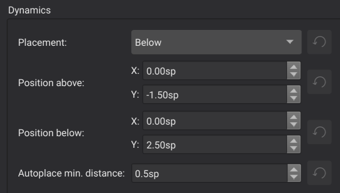
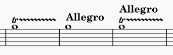
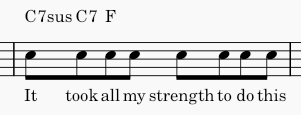

Positioning of elements
MuseScore Studio places elements in your score automatically according to a set of rules and style settings. These are designed to produce excellent results by default. Elements are positioned according to standard engraving practices while avoiding collisions. Default positions can be customized for any given element.
Default position
Most elements in MuseScore have a default position that is determined by a style setting that can be customized via the Properties panel or the Format→Style dialog. For elements that are placed above the staff, the position is specified as an offset from the top line of the staff; for elements that are placed below the staff, the position is specified as an offset from the bottom line of the staff. These offsets, like most measurements in MuseScore, are expressed in staff spaces—abbreviated sp. For many element types, you can specify an offset to be used when placed above as well as a separate offset to be used when placed below, and also which of these placements should be applied by default.
For example, for dynamics, the default placement is below the staff, and the default offset below the bottom staff line is 2.5 sp. If you flip a dynamic marking above the staff, it defaults to 1.5 sp above the top staff line staff (expressed as a negative offset: -1.5 sp). These settings are all found in Format→Style→Dynamics.

Note that the default offset is larger for dynamics placed below the staff than above only because the offset is measured from the baseline of the text.

Auto-place
Auto-place is the term MuseScore uses for a set of algorithms used to avoid collisions as well as to align certain elements automatically. A basic understanding of how auto-place works can be useful when making adjustments.
Vertical collision avoidance
For most elements placed above or below the staff, collision avoidance works vertically. When an element is being positioned, MuseScore first tries to place it according to the default offset for that element type. If that would result in a collision with another element, then one of the two elements will be moved further from the staff to avoid the overlap. MuseScore follows standard engraving rules in determining which elements to move. For example, tempo markings are placed above trill lines, rather than vice versa.

The Minimum distance style setting determines how much distance MuseScore places between elements when avoiding collisions in this manner. The corresponding setting in the Properties panel allows you to override this for individual elements where necessary. But MuseScore adjusts this value automatically when positioning elements manually, as seen below in the section on manual adjustment.
Horizontal collision avoidance
For certain elements such as lyrics or chord symbols, MuseScore will widen measures to avoid collisions rather than displace these elements vertically.

Vertical alignment
MuseScore will also try to align certain elements vertically, so that if one element of that type needs to be adjusted vertically to avoid a collision, other elements of that same type on the same system will automatically be adjusted as well. Elements that are always aligned vertically include lyrics and pedal markings. Dynamics and hairpins will be aligned if they are directly adjacent.

Chord symbols can also be aligned vertically if you enable this in the chord symbol style settings, by setting a Maximum shift value. See Chord symbols for more information.
Disabling auto-place
Auto-place normally does a good job of avoiding collisions and of aligning elements. In cases where you wish to position an element manually, you can usually do so directly without the need to disable auto-place (see manual adjustment below).
However, you may still wish to disable auto-place in some situations. For example, rehearsal markings default to displaying above voltas, but you may wish to reverse this for some specific case where the volta was already displaced higher and there is then room for the rehearsal mark underneath.

In this case, disabling auto-place for the rehearsal mark allows it to display underneath the volta, while still allowing the volta to automatically avoid collisions with the notes.
To disable auto-place for an element, select it and uncheck Auto-place in Properties→General.

The element will be returned to its default position (as determined by its style settings) and it will not be included in the detection of collisions with other elements. Disabling auto-place for an element also causes it to be excluded from any vertical alignment that would otherwise have applied.
Manual adjustment
Whether auto-place has displaced an element from its default position or not, the position of elements can be adjusted manually either by dragging, using the cursor keys, or the Offset fields in the Properties→General→Appearance. See Adjusting elements directly for more information.
MuseScore even allows you to perform manual adjustments that would result in collisions. In the example above, if you drag the rehearsal letter below the volta, MuseScore will allow this and will automatically set the Minimum distance for that element to a negative value, thus effectively allowing the collision without disabling auto-place.
Manual alignment
Elements of the same type will normally be aligned by default simply because they have the same style settings and therefore the same offset. However, auto-place can result in some of the elements being moved further from the staff than others. As described above under Vertical alignment, MuseScore will automatically align some types of elements. For other elements types, you can align them manually by assigning them the same vertical offset.
To do this, simply select the elements you wish to align (e.g., click the first, Shift+click the last), then gradually increase or decrease the vertical offset in the Properties panel. For example, to align a series of tempo markings above the staff, you will need to set their vertical offsets to the same value. To make sure they are aligned and also avoid the collisions that cause auto-place to display one or more of them to begin with, you will need to set the offset to a sufficiently large negative value.